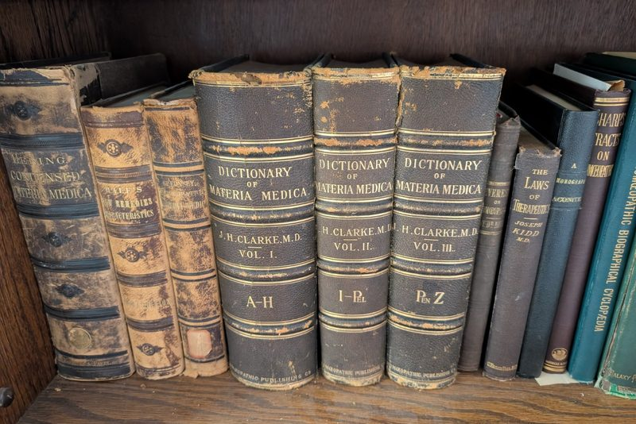

Summary:
- 50 million were thought to have died as a result of the influenza epidemic of 1918, but there is now a potential newly uncovered contributing factor to many of these deaths.
- Aspirin went off patent in 1917, making it available at cheaper prices, and because its patent-owner, Bayer, had worldwide distribution of it, aspirin was available easily and cheaply.
- The Journal of the American Medical Association and other medical journals of the day actually recommended using 1 gram every three hours, which is the equivalent to 90 (!) aspirin a day to suppress the fever in patients suffering from influenza.
- Many of the people who died from influenza were found to have bleeding in the lungs, a strange symptom of the flu and a known side effect from aspirin overdose.
- To date, there has only been a small number of studies that have evaluated the risks and/or benefits from fever-suppressing drugs for patients with Covid-19.
- We need to respect our body’s own immune responses to virus infection and work to support it rather than to suppress such defenses.
Governmental health agencies, medical and health organizations, and the media need to issue warnings to the general public about using fever-suppressing drugs during viral infections. Fever is considered by many to be an important, even vital, defense of the body from viral infection, and suppressing a fever can enable the virus to spread throughout the body.
Today, ibuprofen (Advil) and naproxen (Aleve) are commonly prescribed to reduce a fever and/or provide pain relief, but they are also known to lead to blood clots, a condition that is becoming increasingly common in Covid-19 patients. A leading conventional medical journal published a meta-analysis of 21,000 cases of people with excessive blood clots (a condition called venous thromboembolism), and there was an 80% greater risk of getting this condition in people who used non-steroidal anti-inflammatory drugs (NSAID), which include ibuprofen (Advil, Motrin), naproxen (Aleve), and aspirin, but not acetaminophen (Tylenol).
Doctors are not prescribing aspirin as often these days to suppress fevers in Covid patients, because most doctors know the real dangers of this drug in treating people with a fever. However, innumerable medical websites and mainstream media sources encourage the use of other fever-suppressing drugs, and to date, Anthony Fauci hasn’t yet warned the medical community or the general public about their potential dangers. And yet, starting as early as March, 2020, the FDA warned consumers, “all prescription NSAID labels warn that ‘the pharmacological activity of NSAIDs in reducing inflammation, and possibly fever, may diminish the utility of diagnostic signs in detecting infections.’”
Despite the seeming importance of this subject, the FDA hasn’t reported on any research evaluating the effects of NSAIDs on Covid-19 patients., “At this time, FDA is not aware of scientific evidence connecting the use of NSAIDs, like ibuprofen, with worsening COVID-19 symptoms. The agency is investigating this issue further and will communicate publicly when more information is available.”
It is well-established in medicine that fever is one of the vital components of the body’s immune system in its efforts to fight viral infection. One of America’s leading proponent of vaccines, Paul Offit, MD of the University of Pennsylvania, insists we should let fevers run their course or pay dire consequences.
That said, it is also important to know when fever-suppressing efforts may be necessary to save a life. For instance, the Mayo clinic recommends medical attention for any fever in an infant less than three months of age, infants three to six months old with a temperature taken rectally of 102 degrees or higher, infants six to 24 months with a temperature taken rectally of 102 degrees for more than 24 hours, or adults with high fevers of 103 degrees or higher.
It should be noted that many health and medical websites discourage people from taking these fever-reducing drugs before getting the Covid-19 vaccine. The AARP website even quotes Gregory Poland, M.D., an infectious disease expert at the Mayo Clinic, because it “could dampen the effectiveness of the vaccination.” The AARP website also quotes the U.S. Centers for Disease Control and Prevention (CDC) which advises against the use of these drugs before vaccination “for the purpose of preventing post-vaccination symptoms.”
Understanding and Respecting Fever
It is widely recognized that fever enables the body to increase its production of interferon, an important antiviral substance that is critical for fighting infection. Fever also increases white blood cell mobility and activity, which are instrumental factors in fighting infection: one type of white blood cell called neutrophils patrol the body for pathogens and another type of white blood cell called macrophages gobble them up.
Jane Brody, a long-time respected health columnist for the New York Times, reported as far back as 1982 on the healing benefits of fever. She noted, “a number of physicians, including pediatricians, are now suggesting that moderate fevers be allowed to run their course, for they may shorten the illness, potentiate the action of antibiotics and reduce the chances of spreading the infection to others.” And in 2021, she again reported on ‘Why are we so afraid of fevers?” Brody is even more emphatic in her newest article, asserting, “when you take medication like acetaminophen (Tylenol and its generic forms) or ibuprofen to suppress a fever, you actually work against the inherent protective benefits nature bestowed.”
Recognition that fever is beneficial has been known for more than 2,000 years, and historically, the healing benefits of fever are so substantial that many patients have actually been treated with ”fever therapy” to aid their recovery from such ailments as cancer, tuberculosis and even mania. However, in the late 1800’s, aspirin and its various compounds were shown to rapidly reduce fevers, and the medical view of fever changed dramatically. Drug companies have successfully convinced conventional physicians and the general public to become vigilant in bringing down fevers, even sometimes using such drastic measures as cold baths and alcohol rubs along with aspirin.
Because fever helps the body fight viral infection, fever-suppressing drugs tend to enable the virus to replicate and increase the chances the virus will lead to complications. Then, when the drug’s effects begin to wear off, the person’s fever may then spike even higher. This new “cytokine storm” can become even more dangerous than the original fever, often forcing a physician to prescribe corticosteroids. The use of these powerful immunosuppressing drugs carries with it additional significant risks because the human body becomes even more vulnerable to complications from a viral infection when its immune system is substantially inhibited. Although corticosteroidal drugs can be literally life-saving at this juncture, these drugs still carry the risks of other complications.
Fever-suppression is so common that it is reasonable to wonder if these treatments may be one of the driving forces to America’s high rate of complications and deaths from Covid-19. Worst of all, we have not yet learned important lessons from the previous pandemic of 1918.
Lessons to be Learned from the 1918 Flu Pandemic
Doctors today claim to believe in “evolution,” but they sometimes only give lip service to this important scientific fact. An integral part of understanding and respecting evolution is that the human body’s striving to survive has led to the creation of effective means to defend itself from infection. In fact, fever is one of the body’s vitally important defenses: during a fever, the body naturally increases its production of interferon (an anti-viral chemical) and increases the number and mobility of white blood cells so that they can help fight infections. However, too many medical doctors today prescribe drugs that work directly against the body’s self-defensive efforts, including fevers.
The German company, Bayer, began marketing its new “miracle” drug, aspirin, in 1899. Aspirin was sold as a painkilling drug AND as a drug that reduces fever. Not many people can argue with its successes: it clearly reduced certain types of pain, and it also effectively reduces fever. However, is reducing a fever during a viral infection a smart idea? Using aspirin or other fever-lowering drugs when a person has influenza may be akin to having the person fight flu viruses with two hands tied behind one’s back.
Historically, it is important to know that Bayer’s patent on aspirin in the USA ran out in February, 1917, thereby allowing any and every company to make aspirin at extremely low prices. These facts led to a “perfect storm” for over-prescribing a cheap drug that was encouraged by medical organizations, medical journals, and various military and governmental agencies, at a time when it was not known that aspirin and other fever-suppressing drugs had a seriously dark side to them.
In 1918, the Journal of the American Medical Association (JAMA) actually recommended a dose of 1,000 mg every three hours, which is the equivalent of 90 aspirin tablets in 24 hours. Such dosages are substantially more than the daily dosage considered safe today, and in fact, today, it is specifically not recommended to take aspirin when one has influenza at all, let alone 90 tablets per day. The Surgeon General of the US Navy at that time also recommended aspirin as a symptomatic treatment for influenza. And as a partial result of this recommendation, the military bought huge quantities of aspirin in 1917 and 1918.
And needless to say, any physician who prescribed 25 extra strength aspirin tablets to a patient with influenza would be vulnerable to investigation from the doctor’s medical board.
The famed Smithsonian Magazine referenced several medical authorities at the time who actually recommended even larger doses of aspirin of up to 30 grams per day (the equivalent to 250 aspirin tablets per day).
Based on the War Department’s most conservative count, influenza sickened 26% of the Army, which was more than one million men, and it killed almost 30,000 before they even got to France. The Navy recorded more than 106,000 hospital admissions for influenza and pneumonia out of 600,000 men (and these numbers do not count those people who experienced mild cases of the flu).
The 1918 influenza epidemic was known to have killed many young people and middle-aged people, not just infants and the elderly. This fact is not surprising when you consider that a particularly high percentage of those people killed were in the military and were required to follow their military doctor’s orders for exceedingly high doses of aspirin.
A potential “smoking gun” here is that aspirin could have been an important co-factor in these deaths because many people with this flu died significant amounts of blood in the lungs, a condition that aspirin is known to cause in people who have a respiratory infection.
It was not just the Americans who over-prescribed aspirin and other fever-reducing drugs to people with influenza. A historic 1920 report for the British Ministry of Health on the influenza pandemic recommended that the aspirin dose be 975–1300 mg (3 or 4 tablets), and although no recommended frequency was given, these high doses of aspirin were repeated every hour, every other hour, and every three hours. One London doctor bragged about treating his patient with 1300 mg (4 tablets) hourly for 12 hours nonstop (48 tablets in total).
For the record, physicians in 1918 did not just recommend aspirin to lower fevers, but also used a wide variety of drugs to do this. Whether or not aspirin was available, they used whatever drug they deemed would lower a fever (p. 354). Commonly, doctors recommended quinine (usually recommending a highly dangerous amount of this drug: 1.3 grams every hour; today, it is not recommended to take more than 2 grams per day!). Other doctors insisted upon prescribing arsenic (!), other metallic solutions, and even bloodletting was recommended by one very prominent physician.
Despite the widely known assertion that aspirin should not be prescribed for people with viral infections, especially influenza in infants and children, many doctors still liberally prescribe it or one of the other fever-suppressing drugs, or at least, they do not pro-actively discourage its usage. Sadly, many adults innocently prescribe it for themselves or their children.
It is no wonder that so many people died in the influenza epidemic of 1918, but it wasn’t just because of influenza that they died, it may have also due of the overuse of aspirin and other fever-suppressing drugs of the day. And sadly, until and unless doctors learn to respect fever as an important defense of the body and until they prescribe these drugs more judiciously for people with influenza, we may yet again experience massive numbers of deaths from this usually innocuous disease.
What Studies Say…
An article in the British Medical Journal cites two studies that show worse outcomes in people with respiratory infections who took ibuprofen than those who didn’t. This article quotes Paul Little, a professor of primary care research at the University of Southampton, who said that there was good evidence “that prolonged illness or the complications of respiratory infections may be more common when NSAIDs are used—both respiratory or septic complications and cardiovascular complications.”
And yet, three other studies have seemingly found different results, that is, these studies claim that NSAID users didn’t experience worse health outcomes. However, when one more carefully evaluates these studies, these results are not so certain. One study found worse outcomes for people who tested positive for SARS CoV-2 — the virus said to cause the symptoms named Covid-19 — in NSAID users, but these differences were not statistically significant.
The second study compared Covid-19 outcomes in NSAID users and non-users and found an increased death rate and increased complications of the disease in NSAID users, but these differences were not statistically significant, except for the fact that there was a significant increase in hospital admissions in those patients who were NSAID users for both acute and chronic symptoms (the sub-group was the largest of all of the sub-groups with 146 patients). Part of the problem was that this study was relatively small for this type of research, with 357 subjects who were non-NSAID users and 299 subjects who were NSAID users. Another limitation of this study was that the patients surveyed had a low incidence of severe Covid-19 symptoms (overall, 17% of patients were asymptomatic, 70% reported mild symptoms, 7% were considered moderate, and only 6% were severe).
A third study found an inverse association between low-dose aspirin usage and the likelihood of COVID‐19 infection and disease duration and mortality. Please note that this study investigated the benefits of low-dose aspirin, which is usually around one tablet per day of 75 mg. (this is considerably lower than what people in 1918 did, and it is much lower than what people use when they seek to suppress a fever with it).
One other study that claimed to be the first to compare NSAID users and non-users in hospitalized patients diagnosed with Covid-19 found no evidence that routine NSAID use was associated with higher Covid-19 mortality and a slight (non-statistically significant) benefit in survivability amongst NSAID users (25.9% mortality rate in NSAID users and 29.3% mortality rate in non-NSAID users). However, this study, which was conducted in the United Kingdom, included only 54 NSAID users and 1,168 non-users. The researchers of this study candidly acknowledged that a real limitation of this study was that it simply did not have an adequate number of NSAID users to provide a representative sample.
When one considers how commonly doctors recommend ibuprofen, acetaminophen, aspirin, and naproxen, and perhaps even more frequently, how many people take these drugs on their own, it is shocking how little research has been conducted to evaluate their safety and efficacy in treating people with Covid-19. Do people with Covid-19 who experience blood clots use any of these non-aspirin NSAID drugs? While aspirin is known to reduce blood clots, are the other known side effects providing more risk or benefit? Of the relatively small number of people who have been re-infected with Covid-19, were they more or less likely to have taken one or more of these fever-suppressing drugs during their first bout?
These and other questions are critical if we want to more effectively reduce the rates of complications and the numbers of deaths associated with Covid-19.
Closing Thoughts
An estimated 50 million people died during the “flu epidemic” of 1918, and this article presents a compelling case that a large number of these deaths may have been due to the use of substantial doses of aspirin and other fever-suppressing drugs. For clarity’s sake, this article is not meant to say or even suggest that the majority of deaths from the 1918 pandemic were at all due to aspirin and/or to the other fever-suppressing drugs used at that time.
When you consider that around 40 million people have died from AIDS over a 40-year period (!), the large death toll from influenza in one year alone from October, 1918 to October, 1919 is literally devastating. It is time to acknowledge that the medical community may have inadvertently played a large role in the complication rates and deaths of hundreds of thousands or possibly millions of people. By acknowledging this painful possibility, we can hopefully and finally learn from it.
Based on the relatively little research that has been conducted to date, it seems more than reasonable to follow the “precautionary principle,” which is a philosophical and epistemological approach that emphasizes caution and delay before engaging in specific strategies or treatment options. This precautionary principle is in line with the words and wisdom of Hippocrates (the Father of Medicine) whose most important instruction to physicians was, “First do no harm.”
An integral part of this dictum is that physicians should have a certain respect for that doctor inside each of us and from whom our species has successfully survived over millennia.
According to a CNN report, the low complication and death rates from Covid-19 throughout Asia may be due in part to the significant usage of herbal medicines and medicinal teas which often take the place of NSAIDs and fever-suppressing drugs. Despite the high incidence of Covid-19 in China in early 2020, the Chinese government’s strong support for “traditional medicine” (herbs) has led to impressive health outcomes and a back-to-normal society.
Until more research shows that fever-suppressing drugs are relatively safe, it is reasonable to consider modeling those practices in the world, like those in Asia, where hospitalization and mortality rates are significantly lower than other countries.
Dana Ullman, MPH, CCH, is a certified homeopath who has written 10 books on homeopathy and four chapters on homeopathy in leading medical textbooks (two published by Oxford University Press). His most popular books include Everybody’s Guide to Homeopathic Medicines (co-authored with Stephen Cummings, MD) and The Homeopathic Revolution: Why Famous People and Cultural Heroes Choose Homeopathy (foreword by Dr. Peter Fisher, Physician to Her Majesty Queen Elizabeth II). He directs Homeopathic Educational Services, a leading homeopathic resource center to help people access homeopathic books, medicines, software and e-courses (www.homeopathic.com). He also maintains a homeopathic practice where he sees most of his patients via Zoom or Skype.